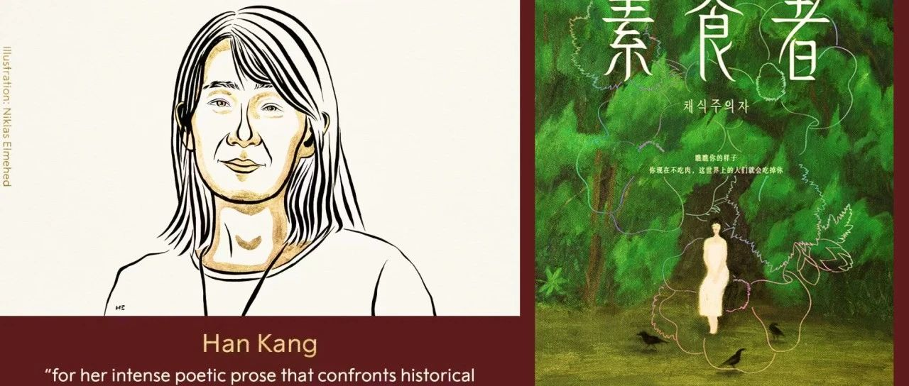

议题笔记 |《素食者》
对作品内容的探讨
「Let's explore the book content」
插画 | Virginia Mori
插画 | Julia Soboleva
作品外的延申
「 our reflections and inspirations 」
（一）女性作家的男性视角
（二）如何看待对“政治正确”的指责？
总结
本次讨论以《素食者》这部作品为核心议题，探讨了书内外关于女性的困境与自由、文学艺术与性别、评价体系的政治正确等多层次内容。我们希望通过多元观点的碰撞和不同声音的汇聚，增进社会对性别议题和女性困境的了解。在《素食者》之外，还有许多优秀的女性主义文学、影视作品等待着大家的关注，希望可以此次讨论可以激发大家对于女性主义作品的热情。
作者 | util
制作 | 阿凯
图源 | 网络